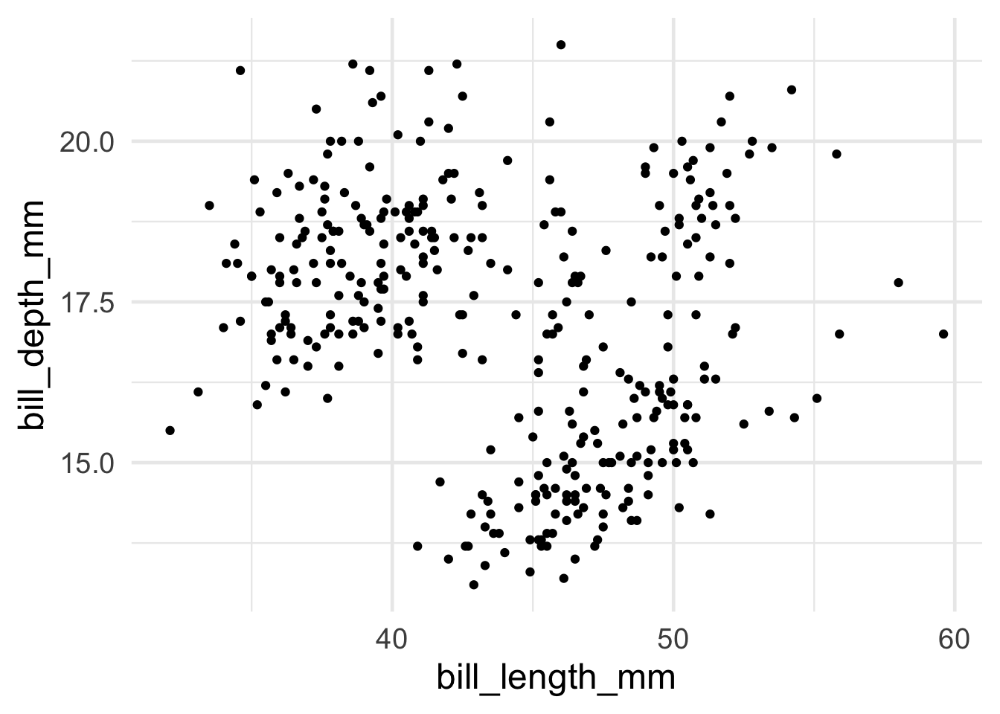
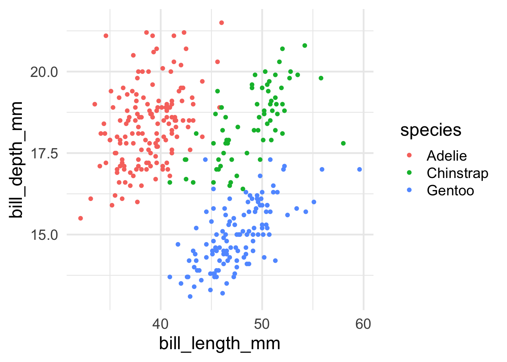
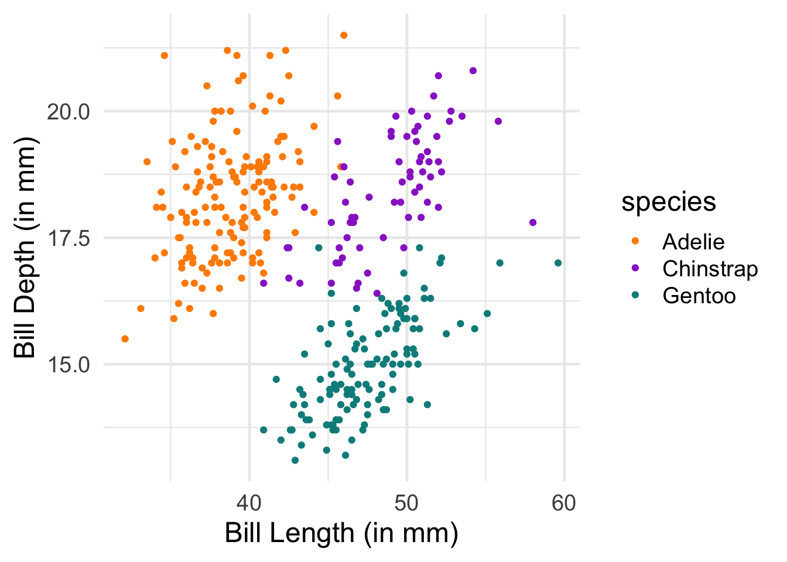
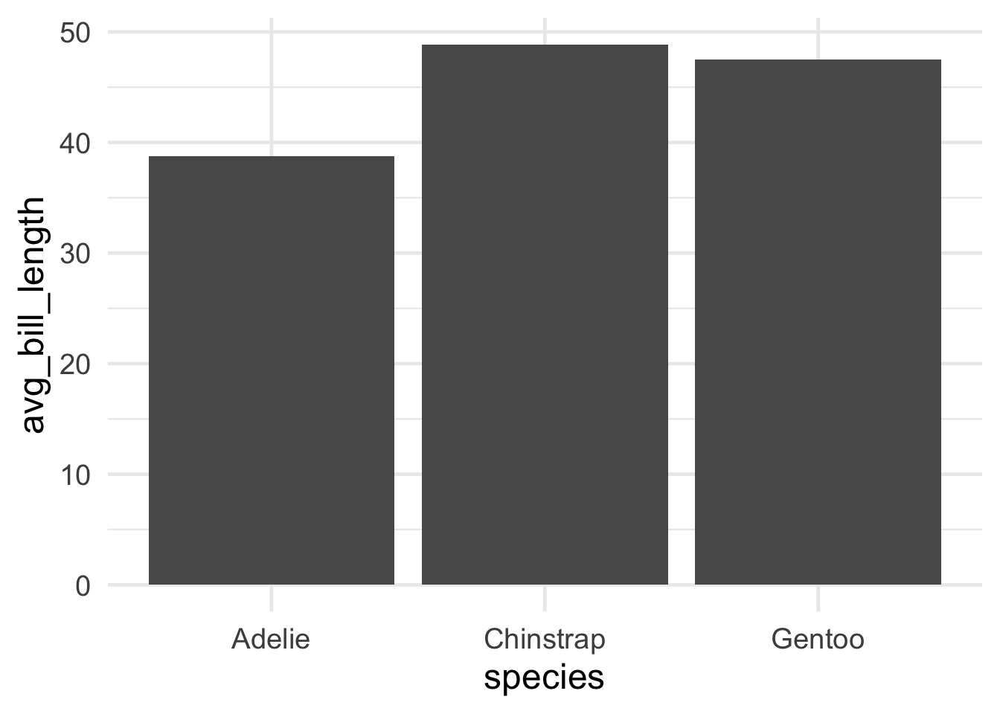
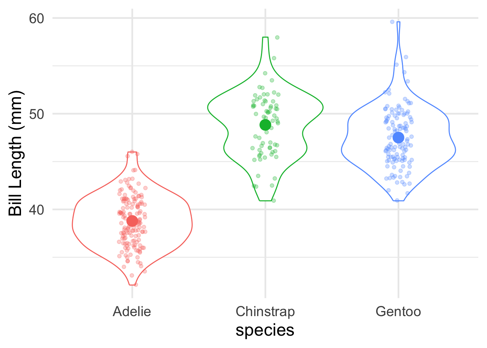

Today’s goal is to get familiar with some of the basics of working with data using R’s tidyverse environment.
Tidyverse is a set of packages written for the statistical software R that is optimized for data science.
There are many components to the tidyverse, but we will focus on three packages in particular:
Getting data into “tidy” format using tidyr
Manipulating or “wrangling” data for analysis using dplyr
Visualizing data using ggplot2
The overarching goal is to give you the basic tools for data exploration and visualization as quickly as possible.
The workflow and philosophy of how this works is captured in this figure from the excellent R for Data Science book by Hadley Wickham (the main author of the tidyverse packages).
The goal of these packages is to give you the tools to:
import your data for analysis
bring the data into a standard, consistent, tidy format
transform the data according to your analysis needs
visualize the data in the service of understanding it
Before beginning this tutorial, make sure to download R and RStudio.
0. Setting Up: Loading the tidyverse packages
This first part of the code just installs and loads the R packages we want to use for the following analyses.
Code
#Install packages we want to use#specify the name of all packages we want to use her#install.packages("tidyverse")#install.packages("palmerpenguins")#load packages we want to uselibrary(tidyverse)
── Attaching core tidyverse packages ──────────────────────── tidyverse 2.0.0 ──
✔ dplyr 1.1.4 ✔ readr 2.1.5
✔ forcats 1.0.0 ✔ stringr 1.5.1
✔ ggplot2 3.5.0 ✔ tibble 3.2.1
✔ lubridate 1.9.3 ✔ tidyr 1.3.1
✔ purrr 1.0.2
── Conflicts ────────────────────────────────────────── tidyverse_conflicts() ──
✖ dplyr::filter() masks stats::filter()
✖ dplyr::lag() masks stats::lag()
ℹ Use the conflicted package (<http://conflicted.r-lib.org/>) to force all conflicts to become errors
Code
library(palmerpenguins)#set some basic plotting defaultstheme_set(theme_minimal(base_size =18))#check the version of R usedprint(R.version.string)
[1] "R version 4.3.2 (2023-10-31)"
1. (Tidy) Data
Here’s the basic idea behind “tidy” data.
In “tidy” data,…
… every row is a single observation (e.g., a trial in experiments)
… every column is a variable with a value describing that observation
For this first introduction, we will use Allison Horst’s palmerpenguins dataset: https://allisonhorst.github.io/palmerpenguins/
The dataset contains information about 344 penguins, from 3 different species of penguins that live on 3 islands in the Palmer Archipelago, Antarctica.
Here’s a cute drawing of the three penguin species: Chinstrap, Gentoo and Adelie!
Let’s load the data and take a peek!
Code
# look at the datapenguins
# A tibble: 344 × 8
species island bill_length_mm bill_depth_mm flipper_length_mm body_mass_g
<fct> <fct> <dbl> <dbl> <int> <int>
1 Adelie Torgersen 39.1 18.7 181 3750
2 Adelie Torgersen 39.5 17.4 186 3800
3 Adelie Torgersen 40.3 18 195 3250
4 Adelie Torgersen NA NA NA NA
5 Adelie Torgersen 36.7 19.3 193 3450
6 Adelie Torgersen 39.3 20.6 190 3650
7 Adelie Torgersen 38.9 17.8 181 3625
8 Adelie Torgersen 39.2 19.6 195 4675
9 Adelie Torgersen 34.1 18.1 193 3475
10 Adelie Torgersen 42 20.2 190 4250
# ℹ 334 more rows
# ℹ 2 more variables: sex <fct>, year <int>
That’s a lot of data! To get a more manageable peek, you can use glimpse()
Each row in the data represents the data from one penguin on one of the 3 islands. Let’s think about what each of our columns means.
species: the species that the penguin belongs to (Chinstrap, Gentoo and Adelie)
island: the island that the penguin lives on (Biscoe, Dream, Torgersen)
information about the penguins’ general size and dimensions:
bill_length_mm: bill length in mm
bill_depth_mm: bill depth in mm
flipper_length_mm: flipper length in mm
body_mass_g: body mass in grams
sex: the sex of the penguin
year: the year the penguin was observed
This data is in tidy format!
… every row corresponds to a single observation (of a penguin)
… each column is a variable with a single value for each observation (penguin)
One useful tip: an easy way to access individual columns in a data frame (or “tibble”) is to use the $ character. So, for example, to access all of the bill lengths we can do penguins$bill_length_mm
Code
#access the bill length columnpenguins$bill_depth_mm
To get a little bit excited, let’s start out by diving right into visualization to flex our new powers. Don’t worry too much about the details just yet. We’ll explain some of the basics in more depth over the next few sessions. This is just to get a quick sense of why it might be cool to learn more about working with data in R.
Let’s say I want to do a scatterplot of bill length by bill depth. Creating that plot using ggplot in R is as simple as the following:
Code
# the ggplot call sets up the basic structure of the graph# first, we specify the dataset we want to use# then, we specify the key "aesthetics" with aes:# what's on x-axis? what's on the y-axis?ggplot(data = penguins, aes(x = bill_length_mm, y = bill_depth_mm)) +# different "geoms" define what type of structure we plot. In this case, we use geom_point() to plot individual dots for each observationgeom_point()
Warning: Removed 2 rows containing missing values or values outside the scale range
(`geom_point()`).

Interesting!! Now, I know there are three species of penguin. Are there any systematicities in bill length and bill depth across them? To see, let’s try to highlight the color of the dots for each species.
Advanced: Why do you think we’re getting the warning message we see?
Code
# add color, defined by the species column, to the aes() callggplot(data = penguins, aes(x = bill_length_mm, y = bill_depth_mm, color=species)) +geom_point()
Warning: Removed 2 rows containing missing values or values outside the scale range
(`geom_point()`).

Ooooh, now I see that there’s something systematic happening here. Let’s put some final touches on this graph so that it looks a bit better: * Change the color scheme to something more attractive * rename the axes for humans
Code
# scatterplot example: penguin bill length versus bill depthggplot(data = penguins, aes(x = bill_length_mm, y = bill_depth_mm, color=species)) +geom_point() +# change colors manuallyscale_color_manual(values =c("darkorange","darkorchid","cyan4"))+# rename axesxlab("Bill Length (in mm)")+ylab("Bill Depth (in mm)")
Warning: Removed 2 rows containing missing values or values outside the scale range
(`geom_point()`).

2. Some coding basics
To get warmed up, let’s get familiar with two key concepts in R:
functions
pipes
Functions
We’ll start with the concept of a function.
Just like in other programming languages, a function is a way to do something to a data object. It takes an argument (or a series of arguments) and returns a value.
A nice example in R is mean(). mean() takes an argument, a numeric vector, and returns the average. mean() also has a second argument, na.rm=TRUE, that can tell it to ignore missing values (this is useful in our penguins dataset).
So, to compute the average bill depth, we can write the following code:
Code
#compute the average bill depthmean(penguins$bill_depth_mm,na.rm=TRUE)
[1] 17.15117
Hmm, that’s a lot of decimal places… It would be nice to clean this up a bit by rounding off after a few decimals. Conveniently, R provides a round() function that does just that! (it takes a second argument, digits, that tells it how many decimal places to round to).
Code
#round the average valueround(mean(penguins$bill_depth_mm,na.rm=TRUE),digits=2)
[1] 17.15
While it’s nice to be able to strong functions together this way, that line is already looking kind of complicated. Is there an easier way to apply functions sequentially, one after the other? We’ll return to this in a moment.
R supplies all sorts of functions that are useful for data analysis. For example, see if you can figure out how heavy the chonkiest penguin is.
Tip: The function for the finding the maximum value of a list/vector in R is max()
Tip #2: If you run into missing values, you can ignore them using the parameter na.rm=TRUE. So max(my_vector,na.rm=TRUE).
Code
#Find the maximum weight in the body_mass_g column
Pipes
We already noticed that the code starts to look complicated once we have to start nesting functions, e.g. round(mean(penguins$bill_depth_mm,na.rm=TRUE),digits=2). This is pretty hard to read and figure out what’s going on!
This motivates the intuition behind why a pipe operator |> (or alternatively %>%) is useful.
Pipes are just a way of bringing the main argument we supply to a function to the front of the operation. For example, to compute the mean of bill depth, we can write the following instead, using the pipe operator:
Code
#compute the mean using a pipepenguins$bill_depth_mm |>mean(na.rm=TRUE)
[1] 17.15117
This allows us to string functions together - basic as many as we want - in the order that we would like to do them. What’s nice about this is that it makes the code much more legible, and it allows us to write the code in their intuitive order.
For example, rather than having to write the nested code above, where the mean() function is nested within the round() function, we can use the pipe operator to write the sequence of operations out in order, for much cleaner code - we can just read off the sequence of actions we’re performing, in order!
In this section, we’re going to become familiar with some of the key tidyverse “verbs”: tidyverse functions for quickly and easily manipulating (“wrangling”) data.
There are many of these functions, but for know, we’ll get to know the following key verbs:
pull()
filter()
mutate()
summarize()
group_by()
NOTE: Tidyverse functions often have very intuitive names, but always be sure to check and make sure you understand what they do by reading the documentation!
You can always get help on a given function by typing ?function_name (e.g., ?pull).
This verb allows us to “pull” the data from specific columns in our dataset - so it provides an alternative to using the $ operator. So, an alternative way to access a column in the penguins dataset is given below.
Code
#first, read more about pull?pull#now, pull data from the bill depth columnpenguins |>pull(bill_depth_mm)
Note that we can now rewrite the code above computing the (rounded) mean to go “full tidyverse”, using only tidyverse functions and concatenating the functions using the pipe operator. Can you figure out how?
Code
#take the penguin dataset#pull the bill depth column#compute the mean, and#round to 2 decimal placespenguins |>pull(bill_depth_mm) |>mean(na.rm=TRUE) |>round(digits=2)
[1] 17.15
Filter
OK, let’s learn something new.
There are lots of reasons you might want to remove rows from your dataset, including getting rid of outliers, selecting subpopulations, and so forth. For this purpose, filter() is a verb (a function in the tidyverse) that takes a data frame as its first argument, and then as its other argument(s) takes the condition(s) you want to filter on.
For example, if we want to just look at the data for those cute Chinstrap penguins, we can do
We can also specify multiple filtering conditions. For example, if we wanted to look at only the Chinstrap penguins that weigh more than 4000g, we could write:
Code
#select only Chinstrap penguins > 4000gpenguins |>filter(species=="Chinstrap",body_mass_g>4000)
Can you filter the data to all of the male Gentoo penguins?
Can you compute the average bill length of Adelie penguins?
Code
#filter to only male Gentoo penguins#compute the average bill length of Adelie penguins
Mutate
Adding columns to data frames is usually done to compute some kind of derived variable. mutate() is the verb for these situations – it allows you to add a column to your dataset (or change one that already exists).
mutate() takes name-value pairs where the name gives the name of the column in the output, and the value is a expression for what value to put in that column.
Let’s add a column that computes bill depth to length
Code
#compute bill depth proportional to length#very low means very long and thin beaks#high means short and stout beakspenguins |>mutate(bill_depth_to_length = bill_depth_mm / bill_length_mm)
# A tibble: 344 × 9
species island bill_length_mm bill_depth_mm flipper_length_mm body_mass_g
<fct> <fct> <dbl> <dbl> <int> <int>
1 Adelie Torgersen 39.1 18.7 181 3750
2 Adelie Torgersen 39.5 17.4 186 3800
3 Adelie Torgersen 40.3 18 195 3250
4 Adelie Torgersen NA NA NA NA
5 Adelie Torgersen 36.7 19.3 193 3450
6 Adelie Torgersen 39.3 20.6 190 3650
7 Adelie Torgersen 38.9 17.8 181 3625
8 Adelie Torgersen 39.2 19.6 195 4675
9 Adelie Torgersen 34.1 18.1 193 3475
10 Adelie Torgersen 42 20.2 190 4250
# ℹ 334 more rows
# ℹ 3 more variables: sex <fct>, year <int>, bill_depth_to_length <dbl>
To store the dataset with the new column, we need assign our new dataset to a variable.
In R, we use <- to assign a value to a variable name (= is ok too for the purposes of this course).
So, to store the new column in our penguins dataset, we can just assign the new data frame to our penguins variable.
Code
#add the new column and store it in penguinspenguins <- penguins |>mutate(bill_depth_to_length = bill_depth_mm / bill_length_mm)#check out our new penguins data frame#we have a new column!penguins
# A tibble: 344 × 9
species island bill_length_mm bill_depth_mm flipper_length_mm body_mass_g
<fct> <fct> <dbl> <dbl> <int> <int>
1 Adelie Torgersen 39.1 18.7 181 3750
2 Adelie Torgersen 39.5 17.4 186 3800
3 Adelie Torgersen 40.3 18 195 3250
4 Adelie Torgersen NA NA NA NA
5 Adelie Torgersen 36.7 19.3 193 3450
6 Adelie Torgersen 39.3 20.6 190 3650
7 Adelie Torgersen 38.9 17.8 181 3625
8 Adelie Torgersen 39.2 19.6 195 4675
9 Adelie Torgersen 34.1 18.1 193 3475
10 Adelie Torgersen 42 20.2 190 4250
# ℹ 334 more rows
# ℹ 3 more variables: sex <fct>, year <int>, bill_depth_to_length <dbl>
Summarize
We sometimes want to summarize across multiple observations in describing our data. This is where summarize() comes in.
What summarize() does is to apply a function to a part of the dataset to create a new summary dataset.
For example, let’s redo our code computing the average bill length using summarize()
Code
#compute the average bill lengthpenguins |>summarize(avg_bill_length =mean(bill_length_mm,na.rm=TRUE))
# A tibble: 1 × 1
avg_bill_length
<dbl>
1 43.9
We can create a dataset with multiple new summarized columns using summarize().
For example, n() is a function that counts up all of the observations. So, we can also add a column with the total number of observations using the code below.
Tip: each specifying how to compute a new column should be separated from the next using a comma.
Ok, is still a little boring. But these functions become very powerful once you bring in the concept of grouping using group_by().
group_by() adds a grouping marker to your dataset. Subsequent verbs like summarize() then use that grouping variable when performing their operation. So, concretely, summarize will apply its functions by each data group. Let’s see how this works in practice.
Let’s say I want to summarize the average bill length for each penguin species. This is now as simple as adding just one grouping, using group_by(), prior to summarizing:
Code
#summarize average bill length by group#notice that we are now counting the number of penguins by species too!penguins |>group_by(species) |>summarize(number_penguins =n(),avg_bill_length =mean(bill_length_mm,na.rm=TRUE) )
We can also apply multiple groupings in order to get data that is further nested. For example, to get a breakdown not only by species, but also by each island for each species, we can just add the island column to group_by().
Code
#summarize by species AND islandpenguins |>group_by(species,island) |>summarize(number_penguins =n(),avg_bill_length =mean(bill_length_mm,na.rm=TRUE) )
`summarise()` has grouped output by 'species'. You can override using the
`.groups` argument.
Turns out that only one penguin appears on all three islands - the other two were only observed on one island!
Finale
You’ve learned some of the most important tidyverse verbs!
To briefly give you a glimpse of why this can be so useful, here’s how you could apply these verbs to wrangle the data into shape for a cool plot.
Let’s create a barplot showing the average bill length, for each penguin species.
Code
#barplot of average bill length, by penguin speciessummarized_species_info <- penguins |>group_by(species) |>summarize(avg_bill_length =mean(bill_length_mm,na.rm=TRUE) )#create a simple bar plotggplot(summarized_species_info,aes(x = species, y = avg_bill_length))+geom_bar(stat="identity")

Code
# Let's make the plot fancier and add in the raw data points!ggplot(summarized_species_info,aes(x = species, y = avg_bill_length,color=species))+geom_violin(data=penguins,aes(y = bill_length_mm)) +geom_jitter(data=penguins,aes(y = bill_length_mm),width=0.1,alpha=0.3)+geom_point(stat="identity",fill=NA,size=5)+ylab("Bill Length (mm)")+theme(legend.position="none")
Warning: Removed 2 rows containing non-finite outside the scale range
(`stat_ydensity()`).
Warning: Removed 2 rows containing missing values or values outside the scale range
(`geom_point()`).

4. Working with Experiment Data
Now, let’s work with a (cleaned-up) version of the type of data you’ll be working with in your experiment.
In the experiment, participants figure out which of two categories (A or B) a given image belongs to through trial and error. Over time (24 trials, organized into three blocks of 8 trials each), they start to learn the category structure. The key manipulation is a between-subjects condition: in the high nameability condition, the features of the images (in this case, colors) are very easy to name (e.g., blue, orange). In the low nameability condition, the colors are very difficult to name (e.g., sienna, mauve). The finding is that categories were easier to learn when the color features were more nameable.
The data here presents the actual data from the first two experiments in the paper (1A and 1B). The experiments are structurally identical - they just use slightly different arrangements of colors.
4.1. Load the data
Code
#read in the data we'll use#data from: Zettersten & Lupyan (2020)#https://drive.google.com/file/d/1kpNFFcPdA9XiL4jseJtnrE3gdUOWkg66/view?usp=drive_linknameability_data <-read_csv("https://raw.githubusercontent.com/COGS119/tutorials/refs/heads/main/R/nameability_exercise.csv")
Rows: 2400 Columns: 7
── Column specification ────────────────────────────────────────────────────────
Delimiter: ","
chr (4): experiment, subject, condition, image_name
dbl (3): total_trial_num, block_num, is_right
ℹ Use `spec()` to retrieve the full column specification for this data.
ℹ Specify the column types or set `show_col_types = FALSE` to quiet this message.
4.2. Understand the structure of the data
First, let’s understand how our data is structured. Here’s another way to take a first peek at your data.
Code
nameability_data |>View()
The data contains the following columns:
experiment: the name of the experiment in the paper (1A or 1B)
subject: the unique participant id
condition: nameability condition (high or low)
total_trial_num: the trial number (1-24)
block_num: the block number (3 blocks of 8 trials each)
image_name: the name of the stimulus to be categorized
is_right: whether the response was correct (is_right=1) or incorrect (is_right=0)
Is the data in tidy format? Why/ why not?
4.3. Summarize the data from Experiment 1A
Let’s summarize the average accuracy for each participant from Experiment 1A only, retaining information about which condition they were in.
Why is it important to first summarize the data by participant? (tip: non-independence of observations)
To do so, we need to:
filter the data to Experiment 1A
group the data by condition (why?) and participant
summarize the average accuracy
Code
#compute the average accuracy for each participant for Experiment 1subj_1a <- nameability_data |>filter(experiment =="1A") |>group_by(condition,subject) |>summarize(accuracy=mean(is_right) )
`summarise()` has grouped output by 'condition'. You can override using the
`.groups` argument.
Code
subj_1a
# A tibble: 50 × 3
# Groups: condition [2]
condition subject accuracy
<chr> <chr> <dbl>
1 high p20905 0.958
2 high p213384 1
3 high p299672 0.833
4 high p359420 0.833
5 high p382311 0.75
6 high p382455 0.917
7 high p445288 0.667
8 high p454103 0.792
9 high p457572 0.917
10 high p461893 0.833
# ℹ 40 more rows
`summarise()` has grouped output by 'condition', 'subject'. You can override
using the `.groups` argument.
Code
subj_block_1a
# A tibble: 150 × 4
# Groups: condition, subject [50]
condition subject block_num accuracy
<chr> <chr> <dbl> <dbl>
1 high p20905 1 0.875
2 high p20905 2 1
3 high p20905 3 1
4 high p213384 1 1
5 high p213384 2 1
6 high p213384 3 1
7 high p299672 1 0.75
8 high p299672 2 0.875
9 high p299672 3 0.875
10 high p359420 1 0.625
# ℹ 140 more rows
Finally, it would be helpful to use the participant-level compute the group-level means for each condition, along with error bars (to give a sense of variability).
Go through each line. Can you figure out what each one is doing?
Notes: we introduce a couple of new functions here:
sd(): computes the standard deviation
sqrt(): computes the square root
we compute the standard error of the mean (sem) using the following formula: \(SEM = \frac{SD}{\sqrt{N}}\)
Code
#compute the overall group mean by condition and block#also compute the standard error of the meangroup_means_1a <- subj_block_1a |>group_by(condition,block_num) |>summarise(mean_correct =mean(accuracy),sd_correct =sd(accuracy),n_obs =n(),sem = sd_correct /sqrt(n_obs))
`summarise()` has grouped output by 'condition'. You can override using the
`.groups` argument.
---title: "Intro to Tidyverse"format: html: code-fold: true code-tools: true toc: trueeditor: visual---# Data Wrangling with RToday's goal is to get familiar with some of the basics of working with data using R's [tidyverse](https://www.tidyverse.org/) environment.Tidyverse is a set of packages written for the statistical software R that is optimized for data science.There are many components to the tidyverse, but we will focus on three packages in particular:- Getting data into "tidy" format using `tidyr`- Manipulating or "wrangling" data for analysis using `dplyr`- Visualizing data using `ggplot2`The overarching goal is to give you the basic tools for data exploration and visualization as quickly as possible.The workflow and philosophy of how this works is captured in this figure from the excellent [R for Data Science](https://r4ds.hadley.nz/) book by Hadley Wickham (the main author of the tidyverse packages).The goal of these packages is to give you the tools to:- **import** your data for analysis- bring the data into a standard, consistent, **tidy** format- **transform** the data according to your analysis needs- **visualize** the data in the service of understanding itBefore beginning this tutorial, make sure to download R and RStudio.## 0. Setting Up: Loading the tidyverse packagesThis first part of the code just installs and loads the R packages we want to use for the following analyses.```{r}#Install packages we want to use#specify the name of all packages we want to use her#install.packages("tidyverse")#install.packages("palmerpenguins")#load packages we want to uselibrary(tidyverse)library(palmerpenguins)#set some basic plotting defaultstheme_set(theme_minimal(base_size =18))#check the version of R usedprint(R.version.string)```## 1. (Tidy) DataHere's the basic idea behind "tidy" data.In "tidy" data,...... every row is a **single observation** (e.g., a trial in experiments)... every column is a **variable** with a **value** describing that observationFor this first introduction, we will use Allison Horst's `palmerpenguins` dataset: https://allisonhorst.github.io/palmerpenguins/The dataset contains information about 344 penguins, from 3 different species of penguins that live on 3 islands in the Palmer Archipelago, Antarctica.Here's a cute drawing of the three penguin species: Chinstrap, Gentoo and Adelie!Let's load the data and take a peek!```{r}# look at the datapenguins```That's a lot of data! To get a more manageable peek, you can use glimpse()```{r}glimpse(penguins)```Each row in the data represents the data from one penguin on one of the 3 islands. Let's think about what each of our columns means.- **species**: the species that the penguin belongs to (Chinstrap, Gentoo and Adelie)- **island**: the island that the penguin lives on (Biscoe, Dream, Torgersen)- information about the penguins' general size and dimensions: - **bill_length_mm**: bill length in mm - **bill_depth_mm**: bill depth in mm - **flipper_length_mm**: flipper length in mm - **body_mass_g**: body mass in grams- **sex**: the sex of the penguin- **year**: the year the penguin was observedThis data is in tidy format!... every row corresponds to a single observation (of a penguin)... each column is a variable with a single value for each observation (penguin)One useful tip: an easy way to access individual columns in a data frame (or "tibble") is to use the \$ character. So, for example, to access all of the bill lengths we can do penguins\$bill_length_mm```{r}#access the bill length columnpenguins$bill_depth_mm```To get a little bit excited, let's start out by diving right into visualization to flex our new powers. Don't worry too much about the details just yet. We'll explain some of the basics in more depth over the next few sessions. This is just to get a quick sense of why it might be cool to learn more about working with data in R.Let's say I want to do a scatterplot of bill length by bill depth. Creating that plot using ggplot in R is as simple as the following:```{r}# the ggplot call sets up the basic structure of the graph# first, we specify the dataset we want to use# then, we specify the key "aesthetics" with aes:# what's on x-axis? what's on the y-axis?ggplot(data = penguins, aes(x = bill_length_mm, y = bill_depth_mm)) +# different "geoms" define what type of structure we plot. In this case, we use geom_point() to plot individual dots for each observationgeom_point()```Interesting!! Now, I know there are three species of penguin. Are there any systematicities in bill length and bill depth across them? To see, let's try to highlight the color of the dots for each species.**Advanced:** Why do you think we're getting the warning message we see?```{r}# add color, defined by the species column, to the aes() callggplot(data = penguins, aes(x = bill_length_mm, y = bill_depth_mm, color=species)) +geom_point()```Ooooh, now I see that there's something systematic happening here. Let's put some final touches on this graph so that it looks a bit better: \* Change the color scheme to something more attractive \* rename the axes for humans```{r}# scatterplot example: penguin bill length versus bill depthggplot(data = penguins, aes(x = bill_length_mm, y = bill_depth_mm, color=species)) +geom_point() +# change colors manuallyscale_color_manual(values =c("darkorange","darkorchid","cyan4"))+# rename axesxlab("Bill Length (in mm)")+ylab("Bill Depth (in mm)")```## 2. Some coding basicsTo get warmed up, let's get familiar with two key concepts in R:- functions- pipes### FunctionsWe'll start with the concept of a function.Just like in other programming languages, a function is a way to **do** something to a data object. It takes an argument (or a series of arguments) and returns a value.A nice example in R is `mean()`. `mean()` takes an argument, a numeric vector, and returns the average. `mean()` also has a second argument, `na.rm=TRUE`, that can tell it to ignore missing values (this is useful in our penguins dataset).So, to compute the average bill depth, we can write the following code:```{r}#compute the average bill depthmean(penguins$bill_depth_mm,na.rm=TRUE)```Hmm, that's a lot of decimal places... It would be nice to clean this up a bit by rounding off after a few decimals. Conveniently, R provides a `round()` function that does just that! (it takes a second argument, digits, that tells it how many decimal places to round to).```{r}#round the average valueround(mean(penguins$bill_depth_mm,na.rm=TRUE),digits=2)```While it's nice to be able to strong functions together this way, that line is already looking kind of complicated. Is there an easier way to apply functions sequentially, one after the other? We'll return to this in a moment.R supplies all sorts of functions that are useful for data analysis. For example, see if you can figure out how heavy the chonkiest penguin is.**Tip**: The function for the finding the maximum value of a list/vector in R is `max()`**Tip #2**: If you run into missing values, you can ignore them using the parameter `na.rm=TRUE`. So `max(my_vector,na.rm=TRUE)`.```{r}#Find the maximum weight in the body_mass_g column```### PipesWe already noticed that the code starts to look complicated once we have to start nesting functions, e.g. `round(mean(penguins$bill_depth_mm,na.rm=TRUE),digits=2)`. This is pretty hard to read and figure out what's going on!This motivates the intuition behind why a **pipe** operator `|>` (or alternatively `%>%`) is useful.Pipes are just a way of bringing the main argument we supply to a function to the front of the operation. For example, to compute the mean of bill depth, we can write the following instead, using the pipe operator:```{r}#compute the mean using a pipepenguins$bill_depth_mm |>mean(na.rm=TRUE)```This allows us to string functions together - basic as many as we want - in the order that we would like to do them. What's nice about this is that it makes the code much more legible, and it allows us to write the code in their intuitive order.For example, rather than having to write the nested code above, where the `mean()` function is nested within the `round()` function, we can use the pipe operator to write the sequence of operations out in order, for much cleaner code - we can just read off the sequence of actions we're performing, in order!```{r}penguins$bill_depth_mm |>mean(na.rm=TRUE) |>round(digits=2)```## 3. Working with Data: Some key tidyverse verbsIn this section, we're going to become familiar with some of the key tidyverse "verbs": tidyverse functions for quickly and easily manipulating ("wrangling") data.There are many of these functions, but for know, we'll get to know the following key verbs:- `pull()`- `filter()`- `mutate()`- `summarize()`- `group_by()`**NOTE:** Tidyverse functions often have very intuitive names, but always be sure to check and make sure you understand what they do by reading the documentation!You can always get help on a given function by typing `?function_name` (e.g., `?pull`).### PullLet's get to know our first verb: `pull()`.See its documentation [here](https://dplyr.tidyverse.org/reference/pull.html).This verb allows us to "pull" the data from specific columns in our dataset - so it provides an alternative to using the `$` operator. So, an alternative way to access a column in the penguins dataset is given below.```{r}#first, read more about pull?pull#now, pull data from the bill depth columnpenguins |>pull(bill_depth_mm)```Note that we can now rewrite the code above computing the (rounded) mean to go "full tidyverse", using only tidyverse functions and concatenating the functions using the pipe operator. Can you figure out how?```{r}#take the penguin dataset#pull the bill depth column#compute the mean, and#round to 2 decimal placespenguins |>pull(bill_depth_mm) |>mean(na.rm=TRUE) |>round(digits=2)```### FilterOK, let's learn something new.There are lots of reasons you might want to remove rows from your dataset, including getting rid of outliers, selecting subpopulations, and so forth. For this purpose, `filter()` is a verb (a function in the tidyverse) that takes a data frame as its first argument, and then as its other argument(s) takes the condition(s) you want to filter on.For example, if we want to just look at the data for those cute Chinstrap penguins, we can do```{r}penguins |>filter(species =="Chinstrap")```We can also specify multiple filtering conditions. For example, if we wanted to look at only the Chinstrap penguins that weigh more than 4000g, we could write:```{r}#select only Chinstrap penguins > 4000gpenguins |>filter(species=="Chinstrap",body_mass_g>4000)```Mini exercises:1. Can you filter the data to all of the male Gentoo penguins?2. Can you compute the average bill length of Adelie penguins?```{r}#filter to only male Gentoo penguins#compute the average bill length of Adelie penguins```### MutateAdding columns to data frames is usually done to compute some kind of derived variable. `mutate()` is the verb for these situations – it allows you to add a column to your dataset (or change one that already exists).`mutate()` takes name-value pairs where the name gives the name of the column in the output, and the value is a expression for what value to put in that column.Let's add a column that computes bill depth to length```{r}#compute bill depth proportional to length#very low means very long and thin beaks#high means short and stout beakspenguins |>mutate(bill_depth_to_length = bill_depth_mm / bill_length_mm)```To store the dataset with the new column, we need assign our new dataset to a variable.In R, we use `<-` to assign a value to a variable name (`=` is ok too for the purposes of this course).So, to store the new column in our penguins dataset, we can just assign the new data frame to our `penguins` variable.```{r}#add the new column and store it in penguinspenguins <- penguins |>mutate(bill_depth_to_length = bill_depth_mm / bill_length_mm)#check out our new penguins data frame#we have a new column!penguins```### SummarizeWe sometimes want to summarize across multiple observations in describing our data. This is where `summarize()` comes in.What `summarize()` does is to apply a function to a part of the dataset to create a new summary dataset.For example, let's redo our code computing the average bill length using `summarize()````{r}#compute the average bill lengthpenguins |>summarize(avg_bill_length =mean(bill_length_mm,na.rm=TRUE))```We can create a dataset with multiple new summarized columns using `summarize()`.For example, `n()` is a function that counts up all of the observations. So, we can also add a column with the total number of observations using the code below.**Tip:** each specifying how to compute a new column should be separated from the next using a comma.```{r}penguins |>summarize(number_penguins =n(),avg_bill_length =mean(bill_length_mm,na.rm=TRUE) )```### Grouping and summarizingOk, is still a little boring. But these functions become very powerful once you bring in the concept of grouping using `group_by()`.`group_by()` adds a grouping marker to your dataset. Subsequent verbs like `summarize()` then use that grouping variable when performing their operation. So, concretely, summarize will apply its functions *by each data group*. Let's see how this works in practice.Let's say I want to summarize the average bill length *for each penguin species*. This is now as simple as adding just one grouping, using `group_by()`, prior to summarizing:```{r}#summarize average bill length by group#notice that we are now counting the number of penguins by species too!penguins |>group_by(species) |>summarize(number_penguins =n(),avg_bill_length =mean(bill_length_mm,na.rm=TRUE) )```We can also apply multiple groupings in order to get data that is further nested. For example, to get a breakdown not only by species, but also by each island for each species, we can just add the `island` column to `group_by()`.```{r}#summarize by species AND islandpenguins |>group_by(species,island) |>summarize(number_penguins =n(),avg_bill_length =mean(bill_length_mm,na.rm=TRUE) )```Turns out that only one penguin appears on all three islands - the other two were only observed on one island!### FinaleYou've learned some of the most important tidyverse verbs!To briefly give you a glimpse of why this can be so useful, here's how you could apply these verbs to wrangle the data into shape for a cool plot.Let's create a barplot showing the average bill length, for each penguin species.```{r}#barplot of average bill length, by penguin speciessummarized_species_info <- penguins |>group_by(species) |>summarize(avg_bill_length =mean(bill_length_mm,na.rm=TRUE) )#create a simple bar plotggplot(summarized_species_info,aes(x = species, y = avg_bill_length))+geom_bar(stat="identity")``````{r}# Let's make the plot fancier and add in the raw data points!ggplot(summarized_species_info,aes(x = species, y = avg_bill_length,color=species))+geom_violin(data=penguins,aes(y = bill_length_mm)) +geom_jitter(data=penguins,aes(y = bill_length_mm),width=0.1,alpha=0.3)+geom_point(stat="identity",fill=NA,size=5)+ylab("Bill Length (mm)")+theme(legend.position="none")```## 4. Working with Experiment DataNow, let's work with a (cleaned-up) version of the type of data you'll be working with in your experiment.This data is from [Zettersten & Lupyan (2020)](https://drive.google.com/file/d/1kpNFFcPdA9XiL4jseJtnrE3gdUOWkg66/view?usp=drive_link).In the experiment, participants figure out which of two categories (A or B) a given image belongs to through trial and error. Over time (24 trials, organized into three blocks of 8 trials each), they start to learn the category structure. The key manipulation is a between-subjects condition: in the high nameability condition, the features of the images (in this case, colors) are very easy to name (e.g., blue, orange). In the low nameability condition, the colors are very difficult to name (e.g., sienna, mauve). The finding is that categories were easier to learn when the color features were more nameable.The data here presents the **actual** data from the first two experiments in the paper (1A and 1B). The experiments are structurally identical - they just use slightly different arrangements of colors.### 4.1. Load the data```{r}#read in the data we'll use#data from: Zettersten & Lupyan (2020)#https://drive.google.com/file/d/1kpNFFcPdA9XiL4jseJtnrE3gdUOWkg66/view?usp=drive_linknameability_data <-read_csv("https://raw.githubusercontent.com/COGS119/tutorials/refs/heads/main/R/nameability_exercise.csv")```### 4.2. Understand the structure of the dataFirst, let's understand how our data is structured. Here's another way to take a first peek at your data.```{r}nameability_data |>View()```The data contains the following columns:- experiment: the name of the experiment in the paper (1A or 1B)- subject: the unique participant id- condition: nameability condition (high or low)- total_trial_num: the trial number (1-24)- block_num: the block number (3 blocks of 8 trials each)- image_name: the name of the stimulus to be categorized- is_right: whether the response was correct (is_right=1) or incorrect (is_right=0)Is the data in tidy format? Why/ why not?### 4.3. Summarize the data from Experiment 1ALet's summarize the average accuracy for each participant from Experiment 1A only, retaining information about which condition they were in.Why is it important to first summarize the data by participant? (tip: non-independence of observations)To do so, we need to:- filter the data to Experiment 1A- group the data by condition (why?) and participant- summarize the average accuracy```{r}#compute the average accuracy for each participant for Experiment 1subj_1a <- nameability_data |>filter(experiment =="1A") |>group_by(condition,subject) |>summarize(accuracy=mean(is_right) )subj_1a```### 4.4. Plot the data```{r}ggplot(subj_1a, aes(condition,accuracy,color=condition,fill=condition))+geom_violin(fill=NA)+#geom_jitter()+geom_dotplot(binaxis="y",stackdir="center")```### 4.5. More advanced summarizingWhat if I'm interested in how accuracy changes across blocks, again for Experiment 1A? Now, I can also group by `block_num`.In the code below, why do I first group by `subject` and then by `block_num`?```{r}subj_block_1a <- nameability_data |>filter(experiment =="1A") |>group_by(condition,subject, block_num) |>summarize(accuracy=mean(is_right) )subj_block_1a```Finally, it would be helpful to use the participant-level compute the group-level means for each condition, along with error bars (to give a sense of variability).Go through each line. Can you figure out what each one is doing?Notes: we introduce a couple of new functions here:- `sd()`: computes the standard deviation- `sqrt()`: computes the square root- we compute the standard error of the mean (`sem`) using the following formula: $SEM = \frac{SD}{\sqrt{N}}$```{r}#compute the overall group mean by condition and block#also compute the standard error of the meangroup_means_1a <- subj_block_1a |>group_by(condition,block_num) |>summarise(mean_correct =mean(accuracy),sd_correct =sd(accuracy),n_obs =n(),sem = sd_correct /sqrt(n_obs))group_means_1a```Let's plot it!```{r}ggplot(group_means_1a,aes(block_num,mean_correct,color=condition))+geom_errorbar(aes(ymin=mean_correct-sem,ymax=mean_correct+sem),width=0)+geom_line()+geom_point(size=3)+xlab("Block Number")+ylab("Average Proportion Correct")+scale_x_continuous(breaks=c(1,2,3))```